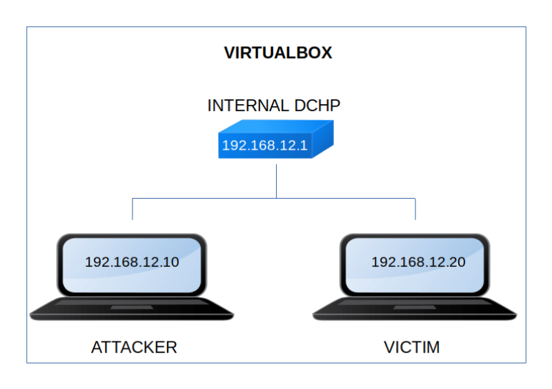

Fawkes
▸ Fawkes
▸ 1. Scan Network
▸ 2. Finding Services and Ports
▸ 3. Enumerate
▸ 3.1 URL and PORT
▸ 3.2 Netcat
▸ 3.2 FTP
▸ 3.3 File
▸ 4. Exploitation of server_hogwarts
▸ 4.1 Buffer overflow: Crashing the program
▸ 4.2 Buffer overflow: Finding the offset
▸ 4.3 Buffer overflow: Controlling EIP
▸ 4.4 Buffer overflow: Finding JMP ESP address
▸ 4.5 Buffer overflow: Reverse Shell
▸ 5. Privilege Escalation
▸ 5.1 Getting the first flag
▸ 5.2 Tcpdump
▸ 5.3 SSH using neville. Second flag.
▸ 5.4 Root privilege. Third flag.
Difficulty: Hard.
Flag: 3 flags.
Learning:
• Enumerate
FTP
File
• Exploitation
Buffer overflow
Crashing the program
Finding the offset
Controlling the EIP
Finding the JMP ESP address
Reverse shell
• Privilege Escalation
Tdpdump
SSH
Linpeas
Sudo vulnerability
• Download (Mirror): https://download.vulnhub.com/harrypotter/Fawkes.ova
• Download (Torrent): https://download.vulnhub.com/harrypotter/Fawkes.ova.torrent
Install the machine on VirtualBox:
1. Download the file.
2. On Virtualbox choose File->Import Appliance.
3. Select the file “ova”.
4. Accept to import.


Watch your Machine IP.
$ ifconfig
Output:

Diagram
